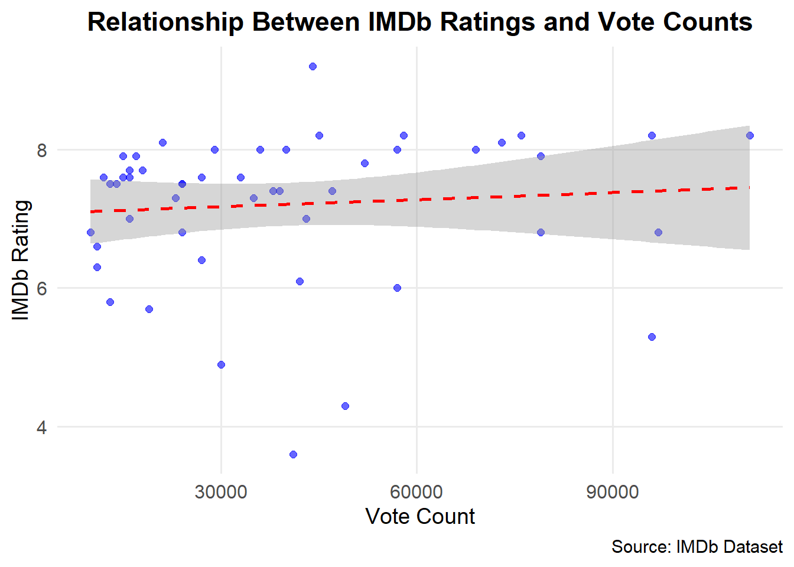
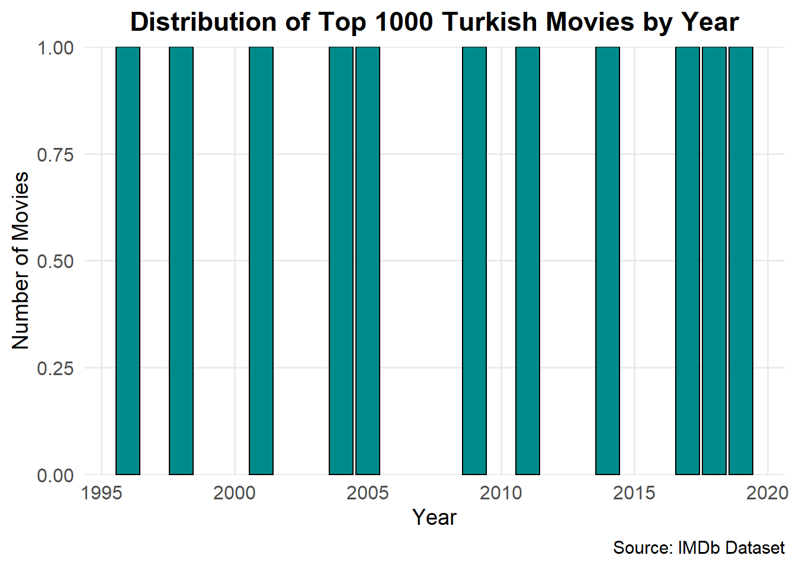

library(tidyverse)Warning: package 'tidyverse' was built under R version 4.4.2Warning: package 'ggplot2' was built under R version 4.4.2Warning: package 'tidyr' was built under R version 4.4.2Warning: package 'readr' was built under R version 4.4.2Warning: package 'purrr' was built under R version 4.4.2Warning: package 'dplyr' was built under R version 4.4.2Warning: package 'stringr' was built under R version 4.4.2Warning: package 'forcats' was built under R version 4.4.2Warning: package 'lubridate' was built under R version 4.4.2── Attaching core tidyverse packages ──────────────────────── tidyverse 2.0.0 ──
✔ dplyr 1.1.4 ✔ readr 2.1.5
✔ forcats 1.0.0 ✔ stringr 1.5.1
✔ ggplot2 3.5.1 ✔ tibble 3.2.1
✔ lubridate 1.9.3 ✔ tidyr 1.3.1
✔ purrr 1.0.2
── Conflicts ────────────────────────────────────────── tidyverse_conflicts() ──
✖ dplyr::filter() masks stats::filter()
✖ dplyr::lag() masks stats::lag()
ℹ Use the conflicted package (<http://conflicted.r-lib.org/>) to force all conflicts to become errorslibrary(rvest)Warning: package 'rvest' was built under R version 4.4.2
Attaching package: 'rvest'
The following object is masked from 'package:readr':
guess_encodinglibrary(stringr)
library(stringi)
recent_movies <- "https://m.imdb.com/search/title/?title_type=feature&release_date=2010-01-01,2023-12-30&num_votes=2500,&country_of_origin=TR&count=250"
old_movies <- "https://m.imdb.com/search/title/?title_type=feature&release_date=,2009-12-31&num_votes=2500,&country_of_origin=TR&count=250"
movie_links <- c(recent_movies, old_movies)
print(movie_links)[1] "https://m.imdb.com/search/title/?title_type=feature&release_date=2010-01-01,2023-12-30&num_votes=2500,&country_of_origin=TR&count=250"
[2] "https://m.imdb.com/search/title/?title_type=feature&release_date=,2009-12-31&num_votes=2500,&country_of_origin=TR&count=250" # function to convert Turkish characters to ASCII
normalize_text <- function(input_text) {
input_text <- stri_trans_general(input_text, "Latin-ASCII")
input_text <- trimws(input_text)
return(input_text)
}
if(!require('stringr')) {install.packages('stringr'); library(stringr)}
# convert duration to minutes (got help from gpt to write convertion function)
transform_duration_to_minutes <- function(movie_duration) {
if (is.na(movie_duration)) {
return(NA)
}
if (str_detect(movie_duration, "^\\d+h$")) {
hrs <- as.numeric(str_replace(movie_duration, "h$", ""))
return(hrs * 60)
}
components <- str_split(movie_duration, " ", simplify = TRUE)
hrs <- as.numeric(str_replace(components[1], "h$", ""))
mins <- as.numeric(str_replace(components[2], "m$", ""))
return(hrs * 60 + mins)
}
# function to clean vote counts
format_vote_count <- function(raw_votes) {
raw_votes <- str_replace_all(raw_votes, '"', "")
raw_votes <- str_trim(raw_votes)
if (grepl("K", raw_votes)) {
raw_votes <- str_replace_all(raw_votes, "[()K]", "")
raw_votes <- str_replace_all(raw_votes, "\\.", "")
return(as.numeric(raw_votes) * 1000)
} else if (grepl("M", raw_votes)) {
raw_votes <- str_replace_all(raw_votes, "[()M]", "")
return(as.numeric(raw_votes) * 1e6)
} else {
raw_votes <- str_replace_all(raw_votes, "[()]", "")
return(as.numeric(raw_votes))
}
}
all_data <- list()
unique_titles <- c()
release_years <- c()
duration_minutes <- c()
total_votes <- c()
average_ratings <- c()
# got help from gpt to write this part to scrape data from imdb
for (link in movie_links) {
webpage <- read_html(link)
titles_raw <- webpage |>
html_nodes('.ipc-title__text') |>
html_text() |>
tail(-1)
titles_raw <- head(titles_raw, -1)
cleaned_titles <- sapply(titles_raw, normalize_text)
cleaned_titles <- unique(cleaned_titles)
cleaned_titles <- cleaned_titles[!grepl("\\?\\u", cleaned_titles)]
unique_titles <- c(unique_titles, cleaned_titles)
years_raw <- webpage |>
html_nodes('.sc-300a8231-7.eaXxft.dli-title-metadata-item:nth-child(1)') |>
html_text() |>
str_extract("\\d{4}") |>
as.numeric()
release_years <- c(release_years, years_raw)
durations_raw <- webpage |>
html_nodes('.sc-300a8231-7.eaXxft.dli-title-metadata-item:nth-child(2)') |>
html_text()
durations_minutes <- sapply(durations_raw, transform_duration_to_minutes)
duration_minutes <- c(duration_minutes, durations_minutes)
ratings_raw <- webpage |>
html_nodes('.ipc-rating-star--rating') |>
html_text() |>
as.numeric()
average_ratings <- c(average_ratings, ratings_raw)
raw_vote_counts <- webpage |>
html_nodes('.ipc-rating-star--voteCount') |>
html_text()
formatted_votes <- sapply(raw_vote_counts, format_vote_count)
total_votes <- c(total_votes, formatted_votes)
movie_data <- data.frame(
Title = unique_titles,
Year = release_years,
Duration = duration_minutes,
Rating = average_ratings,
Votes = total_votes
)
}
compiled_movies <- bind_rows(movie_data)
compiled_movies$Title <- gsub("^\\d+\\.\\s*", "", compiled_movies$Title)
compiled_movies$Title <- trimws(compiled_movies$Title)
print(compiled_movies) Title Year Duration Rating Votes
1 Kuru Otlar Ustune 2023 197 7.7 16000
2 Yedinci Kogustaki Mucize 2019 132 8.2 58000
3 Baskin 2015 97 5.8 13000
4 Kis Uykusu 2014 196 8.0 57000
5 Cebimdeki Yabanci 2018 95 6.8 10000
6 Ayla 2017 125 8.2 45000
7 Bir Zamanlar Anadolu'da 2011 157 7.8 52000
8 Ahlat Agaci 2018 188 8.0 29000
9 Istanbul Icin Son Cagri 2023 91 5.3 96000
10 Dag II 2016 135 8.2 111000
11 Kurak Gunler 2022 129 7.5 13000
12 Dabbe: Cin Carpmasi 2013 134 6.8 79000
13 Mucize 2015 136 7.6 15000
14 Bihter 2023 113 3.6 41000
15 Siccin 2014 96 6.0 57000
16 Olumlu Dunya 2 2023 117 6.8 97000
17 Olumlu Dunya 2018 107 7.6 33000
18 Kedi 2016 79 7.6 16000
19 The Ottoman Lieutenant 2017 106 6.4 27000
20 Dag 2012 90 7.5 24000
21 Av Mevsimi 2010 140 7.4 38000
22 Do Not Disturb 2023 114 6.3 11000
23 Okul Tirasi 2021 85 7.3 35000
24 Aile Arasinda 2017 124 7.6 27000
25 Siccin 2 2015 93 6.1 42000
26 Babam ve Oglum 2005 108 8.2 96000
27 Gunesi Gordum 2009 120 6.6 11000
28 G.O.R.A. 2004 127 8.0 69000
29 Uzak 2002 110 7.5 24000
30 Masumiyet 1997 110 8.1 21000
31 Eskiya 1996 128 8.1 73000
32 Kader 2006 103 7.7 18000
33 Hababam Sinifi 1975 85 9.2 44000
34 Issiz Adam 2008 113 6.8 24000
35 Barda 2007 92 7.0 16000
36 Ucurtmayi Vurmasinlar 1989 85 8.2 76000
37 D@bbe 2006 110 4.3 49000
38 Yol 1982 107 7.9 15000
39 Vavien 2009 100 7.5 14000
40 Kurtlar Vadisi: Irak 2006 122 5.7 19000
41 Nefes 2009 128 8.0 36000
42 Agir Roman 1997 120 7.6 12000
43 Vizontele 2001 110 8.0 40000
44 Uc Maymun 2008 109 7.3 23000
45 Sevmek Zamani 1965 86 7.9 79000
46 Recep Ivedik 2008 90 4.9 30000
47 Gemide 1998 102 7.9 17000
48 A.R.O.G 2008 127 7.4 47000
49 Yahsi Bati 2009 112 7.4 39000
50 Itiraf 2001 100 7.0 43000# sorting by IMDb ratings
top_rated_movies <- compiled_movies |> arrange(desc(Rating)) |> head(5)
least_rated_movies <- compiled_movies |> arrange(Rating) |> head(5)
print(top_rated_movies) Title Year Duration Rating Votes
1 Hababam Sinifi 1975 85 9.2 44000
2 Yedinci Kogustaki Mucize 2019 132 8.2 58000
3 Ayla 2017 125 8.2 45000
4 Dag II 2016 135 8.2 111000
5 Babam ve Oglum 2005 108 8.2 96000print(least_rated_movies) Title Year Duration Rating Votes
1 Bihter 2023 113 3.6 41000
2 D@bbe 2006 110 4.3 49000
3 Recep Ivedik 2008 90 4.9 30000
4 Istanbul Icin Son Cagri 2023 91 5.3 96000
5 Kurtlar Vadisi: Irak 2006 122 5.7 19000# favorite movies
favorites <- c("Babam ve Oglum", "G.O.R.A.", "Kis Uykusu")
favorite_movie_data <- compiled_movies |> filter(Title %in% favorites)
print(favorite_movie_data) Title Year Duration Rating Votes
1 Kis Uykusu 2014 196 8.0 57000
2 Babam ve Oglum 2005 108 8.2 96000
3 G.O.R.A. 2004 127 8.0 69000ratings_per_year <- compiled_movies |>
group_by(Year) |>
summarise(Average_Rating = mean(Rating, na.rm = TRUE), Movie_Count = n())
library(ggplot2)
ggplot(ratings_per_year, aes(x = Year, y = Average_Rating)) +
geom_point(color = "blue", size = 3, alpha = 0.8) +
geom_line(color = "darkblue", size = 1) +
labs(
title = "Average IMDb Rating Over the Years",
x = "Year",
y = "Average IMDb Rating",
caption = "Source: IMDb Dataset"
) +
theme_minimal(base_size = 14) +
scale_y_continuous(limits = c(0, 10), breaks = seq(0, 10, 1)) +
theme(
plot.title = element_text(hjust = 0.5, face = "bold"),
axis.text = element_text(size = 12),
panel.grid.minor = element_blank()
)Warning: Using `size` aesthetic for lines was deprecated in ggplot2 3.4.0.
ℹ Please use `linewidth` instead.ggplot(ratings_per_year, aes(x = Year, y = Movie_Count)) +
geom_bar(stat = "identity", fill = "steelblue", color = "black", width = 0.8) +
labs(
title = "Number of Movies Released Per Year",
x = "Year",
y = "Movie Count",
caption = "Source: IMDb Dataset"
) +
theme_minimal(base_size = 14) +
scale_y_continuous(expand = c(0, 0)) +
theme(
plot.title = element_text(hjust = 0.5, face = "bold"),
axis.text = element_text(size = 12),
panel.grid.minor = element_blank()
)# correlation analysis between votes and ratings
correlation_votes_ratings <- cor(compiled_movies$Votes, compiled_movies$Rating, use = "complete.obs")
print(paste("Correlation between Votes and Ratings: ", correlation_votes_ratings))[1] "Correlation between Votes and Ratings: 0.0827775968323517"ggplot(compiled_movies, aes(x = Votes, y = Rating)) +
geom_point(color = "blue", alpha = 0.6, size = 2) +
geom_smooth(method = "lm", color = "red", se = TRUE, linetype = "dashed") +
labs(
title = "Relationship Between IMDb Ratings and Vote Counts",
x = "Vote Count",
y = "IMDb Rating",
caption = "Source: IMDb Dataset"
) +
theme_minimal(base_size = 14) +
theme(
plot.title = element_text(hjust = 0.5, face = "bold"),
axis.text = element_text(size = 12),
panel.grid.minor = element_blank()
)`geom_smooth()` using formula = 'y ~ x'
# correlation analysis between duration and ratings
duration_rating_correlation <- cor(compiled_movies$Duration, compiled_movies$Rating, use = "complete.obs")
print(paste("Correlation between Duration and Ratings: ", duration_rating_correlation))[1] "Correlation between Duration and Ratings: 0.225018765415274"ggplot(compiled_movies, aes(x = Duration, y = Rating)) +
geom_point(color = "darkorange", alpha = 0.7, size = 2) +
geom_smooth(method = "lm", color = "blue", se = TRUE, linetype = "dotted") +
labs(
title = "Relationship Between IMDb Ratings and Movie Duration",
x = "Movie Duration (minutes)",
y = "IMDb Rating",
caption = "Source: IMDb Dataset"
) +
theme_minimal(base_size = 14) +
theme(
plot.title = element_text(hjust = 0.5, face = "bold"),
axis.text = element_text(size = 12),
panel.grid.minor = element_blank()
)`geom_smooth()` using formula = 'y ~ x'imdb_top_1000_url <- "https://www.imdb.com/search/title/?title_type=feature&groups=top_1000&country_of_origin=TR"
# same as above instead just scraped title and year
top_1000_html <- read_html(imdb_top_1000_url)
top_1000_titles <- top_1000_html |>
html_nodes('.ipc-title__text') |>
html_text() |>
tail(-1) |>
head(-1)
cleaned_top_titles <- sapply(top_1000_titles, normalize_text)
cleaned_top_titles <- unique(cleaned_top_titles)
cleaned_top_titles <- cleaned_top_titles[!grepl("\\?\\u", cleaned_top_titles)]
top_1000_years <- top_1000_html |>
html_nodes('.sc-300a8231-7.eaXxft.dli-title-metadata-item:nth-child(1)') |>
html_text() |>
as.numeric()
top_1000_df <- data.frame(Title = cleaned_top_titles, Year = top_1000_years)
top_1000_df$Title <- gsub("^\\d+\\.\\s*", "", top_1000_df$Title)
top_1000_df$Title <- trimws(top_1000_df$Title)
print(top_1000_df) Title Year
1 Yedinci Kogustaki Mucize 2019
2 Kis Uykusu 2014
3 Ayla 2017
4 Bir Zamanlar Anadolu'da 2011
5 Babam ve Oglum 2005
6 Ahlat Agaci 2018
7 G.O.R.A. 2004
8 Eskiya 1996
9 Nefes 2009
10 Vizontele 2001
11 Her Sey Cok Guzel Olacak 1998merged_dataset <- left_join(top_1000_df, movie_data, by = c("Title", "Year"))
print(merged_dataset) Title Year Duration Rating Votes
1 Yedinci Kogustaki Mucize 2019 NA NA NA
2 Kis Uykusu 2014 NA NA NA
3 Ayla 2017 NA NA NA
4 Bir Zamanlar Anadolu'da 2011 NA NA NA
5 Babam ve Oglum 2005 NA NA NA
6 Ahlat Agaci 2018 NA NA NA
7 G.O.R.A. 2004 NA NA NA
8 Eskiya 1996 NA NA NA
9 Nefes 2009 NA NA NA
10 Vizontele 2001 NA NA NA
11 Her Sey Cok Guzel Olacak 1998 NA NA NAranked_movies <- merged_dataset |> arrange(desc(Rating))
print(ranked_movies) Title Year Duration Rating Votes
1 Yedinci Kogustaki Mucize 2019 NA NA NA
2 Kis Uykusu 2014 NA NA NA
3 Ayla 2017 NA NA NA
4 Bir Zamanlar Anadolu'da 2011 NA NA NA
5 Babam ve Oglum 2005 NA NA NA
6 Ahlat Agaci 2018 NA NA NA
7 G.O.R.A. 2004 NA NA NA
8 Eskiya 1996 NA NA NA
9 Nefes 2009 NA NA NA
10 Vizontele 2001 NA NA NA
11 Her Sey Cok Guzel Olacak 1998 NA NA NAhead(ranked_movies, 11) Title Year Duration Rating Votes
1 Yedinci Kogustaki Mucize 2019 NA NA NA
2 Kis Uykusu 2014 NA NA NA
3 Ayla 2017 NA NA NA
4 Bir Zamanlar Anadolu'da 2011 NA NA NA
5 Babam ve Oglum 2005 NA NA NA
6 Ahlat Agaci 2018 NA NA NA
7 G.O.R.A. 2004 NA NA NA
8 Eskiya 1996 NA NA NA
9 Nefes 2009 NA NA NA
10 Vizontele 2001 NA NA NA
11 Her Sey Cok Guzel Olacak 1998 NA NA NAggplot(ranked_movies, aes(x = Year)) +
geom_bar(fill = "darkcyan", color = "black", width = 0.9) +
labs(
title = "Distribution of Top 1000 Turkish Movies by Year",
x = "Year",
y = "Number of Movies",
caption = "Source: IMDb Dataset"
) +
theme_minimal(base_size = 14) +
scale_y_continuous(expand = c(0, 0)) +
theme(
plot.title = element_text(hjust = 0.5, face = "bold"),
axis.text = element_text(size = 12),
panel.grid.minor = element_blank()
)
# then merged with others
merged_dataset <- left_join(top_1000_df, compiled_movies, by = c("Title", "Year"))
print("Merged Dataset:")[1] "Merged Dataset:"print(head(merged_dataset)) Title Year Duration Rating Votes
1 Yedinci Kogustaki Mucize 2019 132 8.2 58000
2 Kis Uykusu 2014 196 8.0 57000
3 Ayla 2017 125 8.2 45000
4 Bir Zamanlar Anadolu'da 2011 157 7.8 52000
5 Babam ve Oglum 2005 108 8.2 96000
6 Ahlat Agaci 2018 188 8.0 29000average_rating <- mean(merged_dataset$Rating, na.rm = TRUE)
print(paste("Average IMDb rating of the Top 1000 Turkish movies: ", average_rating))[1] "Average IMDb rating of the Top 1000 Turkish movies: 8.05"ranked_top_11 <- merged_dataset |>
arrange(desc(Rating)) |>
head(11)
print("IMDb Top 1000 Turkish Movies:")[1] "IMDb Top 1000 Turkish Movies:"print(ranked_top_11) Title Year Duration Rating Votes
1 Yedinci Kogustaki Mucize 2019 132 8.2 58000
2 Ayla 2017 125 8.2 45000
3 Babam ve Oglum 2005 108 8.2 96000
4 Eskiya 1996 128 8.1 73000
5 Kis Uykusu 2014 196 8.0 57000
6 Ahlat Agaci 2018 188 8.0 29000
7 G.O.R.A. 2004 127 8.0 69000
8 Nefes 2009 128 8.0 36000
9 Vizontele 2001 110 8.0 40000
10 Bir Zamanlar Anadolu'da 2011 157 7.8 52000
11 Her Sey Cok Guzel Olacak 1998 NA NA NAinitial_top_11 <- compiled_movies |>
arrange(desc(Rating)) |>
head(11)
print("Initial Top 1000 Movies from the Original Dataset:")[1] "Initial Top 1000 Movies from the Original Dataset:"print(initial_top_11) Title Year Duration Rating Votes
1 Hababam Sinifi 1975 85 9.2 44000
2 Yedinci Kogustaki Mucize 2019 132 8.2 58000
3 Ayla 2017 125 8.2 45000
4 Dag II 2016 135 8.2 111000
5 Babam ve Oglum 2005 108 8.2 96000
6 Ucurtmayi Vurmasinlar 1989 85 8.2 76000
7 Masumiyet 1997 110 8.1 21000
8 Eskiya 1996 128 8.1 73000
9 Kis Uykusu 2014 196 8.0 57000
10 Ahlat Agaci 2018 188 8.0 29000
11 G.O.R.A. 2004 127 8.0 69000same_movies <- all(ranked_top_11$Title %in% initial_top_11$Title)
if (same_movies) {
print("Yes, IMDb's Top 1000 list might be based solely on ratings.")
} else {
print("No, IMDb's Top 1000 list might consider other factors.")
}[1] "No, IMDb's Top 1000 list might consider other factors."if (!same_movies) {
different_movies <- ranked_top_11$Title[!ranked_top_11$Title %in% initial_top_11$Title]
print("Different movies in IMDb's Top 1000:")
print(different_movies)
}[1] "Different movies in IMDb's Top 1000:"
[1] "Nefes" "Vizontele"
[3] "Bir Zamanlar Anadolu'da" "Her Sey Cok Guzel Olacak"